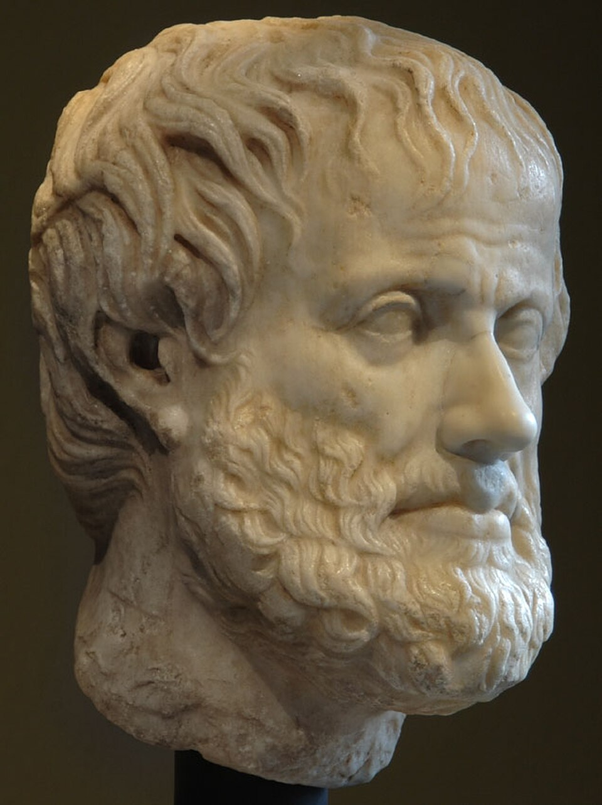
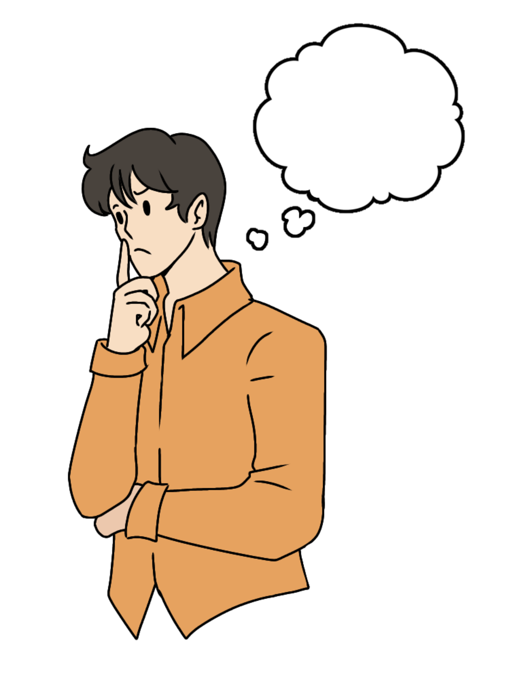
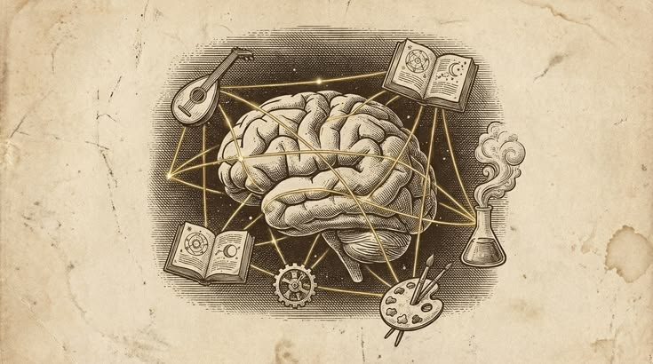
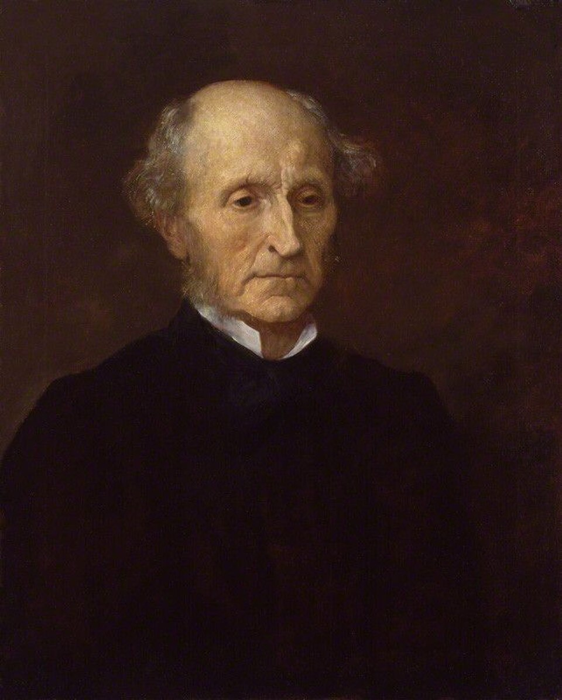

Ethics, or moral philosophy, is the branch of philosophy that asks how
human beings ought to live, what makes actions right or wrong, what
makes a life good, and what we owe to one another.
What Is Ethics in Philosophy?
Ethics is the branch of philosophy concerned with morality: the
systematic examination of right and wrong, good and bad, virtue and
vice, obligation and responsibility, justice and fairness, and the
reasons that can justify our moral judgments. Ethics is sometimes called
moral philosophy because it does not merely describe what
people happen to believe about morality. It asks whether those beliefs
are justified and what principles, values, or forms of reasoning should
guide human action. A central question of ethics is therefore not simply
“What do people do?” but
“What ought people to do, and why?”

Aristotle treated ethics as a practical inquiry into human
flourishing, character, virtue, friendship, and the good life.
The English word ethics derives from the Greek ēthos,
associated with character, custom, or habitual ways of living. This
history is philosophically significant because many ethical traditions
have asked whether morality is fundamentally about character, action,
rules, consequences, relationships, or the ultimate purpose of human
life. Aristotle emphasized the formation of virtuous character; Kant
emphasized rational duty and universal moral law; utilitarian
philosophers emphasized consequences and well-being; and contemporary
ethical theories have explored justice, care, contractual agreement,
rights, responsibility, and moral recognition.
Ethics is therefore broader than a simple list of rules about right and
wrong. It investigates the foundations of moral judgment and the
structure of practical reasoning. Ethical philosophy can ask whether
moral truths are objective, whether moral obligations depend on
rationality, whether consequences determine right action, whether
virtues are necessary for a good life, and whether moral principles
should apply universally. These questions make ethics both a theoretical
discipline and a practical philosophy of human conduct.
Ethical reasoning also appears far beyond the philosophy classroom.
Questions about punishment, medical treatment, artificial intelligence,
environmental responsibility, business conduct, animal welfare,
political authority, war, poverty, privacy, technology, and personal
relationships all involve moral concepts. Applied ethics takes general
philosophical ideas and examines how they function in particular
circumstances, while normative ethics attempts to formulate principles
for evaluating actions, choices, character, and institutions.
Core Questions of Ethics and Moral Philosophy
Ethical philosophy begins with questions that arise whenever human
beings must decide how to act or evaluate how someone has acted. Some
questions concern individual choices, while others concern the nature of
a good society, the status of moral values, or the possibility of moral
knowledge. These questions cannot always be answered by appealing to
custom, law, authority, or personal preference because ethics asks
whether those sources themselves can be justified.

Ethical reasoning examines the reasons behind moral judgments rather
than simply accepting inherited rules or social conventions.
What makes an action morally right or wrong? Is
morality determined by consequences, duties, intentions, character,
relationships, or some combination of these?
What is the good life? Is a good human life defined
by happiness, pleasure, virtue, flourishing, freedom, meaningfulness,
relationships, achievement, or something else?
Are moral values objective? Do moral facts exist
independently of human opinion, or are moral judgments constructed by
individuals, cultures, communities, or forms of practical reasoning?
What do we owe to other people? Do we have duties to
strangers as well as family and friends, and how should competing
obligations be balanced?
Can morality be justified by reason? Can rational
argument establish moral obligations, or do emotion, intuition, social
practice, and moral experience play an irreducible role?
Are human beings morally responsible? If actions are
influenced by biology, upbringing, society, psychology, or causal
forces, under what conditions can someone fairly be praised or blamed?
What is justice? How should benefits, burdens,
opportunities, rights, punishments, and resources be distributed among
people?
These questions show why ethics cannot be reduced to simple instructions
such as “be good.” Moral philosophy investigates what goodness means,
what makes a duty binding, how conflicting values should be compared,
and whether moral judgments can be true or justified at all. Different
ethical theories answer these questions in different ways, which is why
philosophical disagreement about morality can remain rational even when
the participants share many everyday moral intuitions.
History of Ethics: From Ancient Philosophy to Contemporary Moral Theory
The history of ethics is much broader than any single philosophical
tradition. Ancient Greek philosophy provided some of the most
influential systematic discussions of virtue, justice, happiness, moral
knowledge, and the examined life. Socrates challenged people to examine
their beliefs about justice and virtue; Plato connected ethics with
questions about the good, the soul, education, and political order; and
Aristotle developed an extensive account of flourishing, virtue,
practical reasoning, friendship, pleasure, and responsibility.
Socratic questioning made the examination and justification of moral
beliefs a central activity of Western philosophy.
Hellenistic Ethics: Stoicism and Epicureanism
Hellenistic philosophers transformed ethical inquiry into a sustained
investigation of how human beings should live under conditions of
uncertainty, suffering, political instability, and mortality. The Stoics
emphasized rational self-command, virtue, and living in accordance with
nature, while Epicurean philosophy emphasized pleasure understood
through tranquility, freedom from unnecessary disturbance, friendship,
and the removal of irrational fears. These traditions demonstrate that
ancient ethics was deeply concerned with practical transformation rather
than abstract rules alone.
Medieval Ethics and Religious Philosophy
Medieval ethical thought developed within Jewish, Christian, Islamic,
and other intellectual traditions. Philosophers debated divine law,
human freedom, virtue, natural law, reason, revelation, and the
relationship between earthly and ultimate goods. Thinkers such as
Augustine and Thomas Aquinas developed influential Christian approaches,
while Islamic philosophers including al-Farabi, Avicenna, and Averroes
participated in wider debates about virtue, happiness, reason, law, and
human perfection.
Early Modern and Enlightenment Ethics
Early modern philosophy introduced new approaches to moral psychology,
reason, sentiment, political obligation, and individual freedom.
Philosophers such as Hobbes, Locke, Hume, Rousseau, and Kant developed
different accounts of human motivation, social order, moral judgment,
and practical reason. Hume famously emphasized sentiment and sympathy,
while Kant sought a universal moral framework grounded in rational
autonomy and duty.
Nineteenth-Century Ethics and Utilitarianism
Jeremy Bentham and John Stuart Mill developed influential versions of
utilitarian moral philosophy, making happiness and consequences central
to moral evaluation. At the same time, nineteenth-century philosophy
explored freedom, individuality, historical development, religion,
alienation, and the meaning of human existence. Nietzsche offered a
radical genealogy and critique of conventional morality, questioning
inherited assumptions about good and evil, guilt, punishment, and value.
Twentieth-Century and Contemporary Ethics
Twentieth-century moral philosophy expanded into analytic metaethics,
existentialist ethics, phenomenology, political philosophy, feminist
ethics, care ethics, applied ethics, and renewed virtue ethics.
Philosophers increasingly investigated language, moral realism,
practical reason, justice, responsibility, identity, oppression,
technology, environmental responsibility, animal ethics, and global
obligations. Contemporary ethics is therefore not a single school but a
diverse field containing many competing methods and theories.
Branches of Ethics: Metaethics, Normative Ethics, and Applied Ethics
A common way of organizing moral philosophy is to distinguish
metaethics, normative ethics, and
applied ethics. The three areas ask different kinds of
questions. Metaethics investigates the meaning, status, truth, and
foundations of moral claims. Normative ethics develops and evaluates
principles for determining what people ought to do and what kinds of
character or conduct are morally valuable. Applied ethics examines
concrete moral problems in medicine, business, politics, technology, the
environment, animal ethics, professional life, and everyday practice.
The distinction is useful because a disagreement about a particular
moral issue can occur at several different levels. Two philosophers
might agree that moral judgments can be objectively true while
disagreeing about whether a particular action is right. Alternatively,
they might agree about the moral rule but disagree about whether moral
truths are objective facts, rational constructions, emotional
expressions, or social conventions. Understanding these levels prevents
different philosophical questions from being treated as though they were
the same problem.
Metaethics: What Is Morality?
Metaethics asks questions about morality itself. What does the word
“good” mean? Are moral properties real? Are moral statements capable of
being true or false? How could human beings know moral truths if such
truths exist? Metaethical theories include moral realism, various forms
of anti-realism, expressivism, emotivism, constructivism, subjectivism,
and relativism. Metaethics therefore operates at a second-order level:
instead of immediately asking whether an action is right, it
investigates what it means for an action to be right.
Normative Ethics: What Ought We to Do?
Normative ethics asks what principles should govern moral judgment and
action. Major approaches include virtue ethics,
deontological ethics, and
consequentialist ethics. Other influential approaches
include contractualism, care ethics, rights-based theories, natural law
traditions, and forms of moral particularism. Normative ethics is
concerned with standards that distinguish morally permissible,
impermissible, obligatory, or admirable conduct.
Applied Ethics: How Should Moral Principles Address Real Problems?
Applied ethics brings moral reasoning into specific practical contexts.
Bioethics considers questions about medical treatment, reproductive
technologies, consent, research, and end-of-life decisions. Business
ethics examines corporate responsibility, honesty, labor practices, and
conflicts between profit and social obligations. Environmental ethics
asks what obligations human beings have toward ecosystems, animals, and
future generations. Technology ethics considers privacy, surveillance,
artificial intelligence, automation, algorithmic discrimination, and
responsibility for technological systems.
Metaethics: The Philosophical Foundations of Morality
Metaethics asks what moral judgments are and what, if anything, makes
them true. Rather than beginning with the question “Is lying wrong?”,
metaethics might ask what it means for the statement “lying is wrong” to
be true. It therefore investigates moral language, moral ontology, moral
epistemology, and the possibility of objective moral knowledge. These
questions became especially prominent in modern analytic philosophy,
although earlier philosophers had already debated whether goodness is
objective, natural, divine, rational, or dependent upon human practices.

Metaethics examines the status and foundations of moral values,
judgments, properties, and language.
Moral Realism
Moral realism is the view, broadly understood, that
moral facts or truths exist independently of what any particular person
happens to believe. A moral realist might therefore hold that an action
can be wrong even if an individual or society approves of it. Moral
realism itself comes in different forms, including naturalist and
non-naturalist approaches, and philosophers disagree about what kind of
facts moral facts would be and how human beings could know them.
Moral Anti-Realism and Expressivism
Moral anti-realism encompasses several positions that
reject at least some form of mind-independent moral fact. Emotivist and
expressivist theories, for example, understand moral language partly in
terms of attitudes, commitments, prescriptions, or practical expressions
rather than straightforward descriptions of independent moral
properties. Other anti-realist theories explain morality through human
practices, rational construction, or other non-realist foundations.
These positions should not be treated as identical: they provide
different explanations of what moral discourse does and how moral
disagreement works.
Moral Relativism and Moral Objectivity
Moral relativism is often associated with the claim
that moral truth or justification is relative to a person, culture,
framework, or other standpoint. However, relativism is more precise than
the simple observation that different societies have different moral
customs. Cultural disagreement by itself does not prove that morality is
relative. The philosophical question is whether such disagreement
implies that there is no single objective moral standard independent of
the relevant perspective.
Moral Constructivism
Moral constructivism approaches moral truth through
procedures of rational justification or practical reasoning rather than
treating moral facts as independent objects existing in the world.
Constructivist approaches differ considerably, but they generally
attempt to explain moral normativity through what rational agents could
justify, endorse, or construct under appropriate conditions. This makes
constructivism distinct from both straightforward moral realism and
simple relativism.
Metaethics matters because a theory about what people ought to do may
depend, explicitly or implicitly, on assumptions about moral truth,
knowledge, reason, motivation, and human agency. A philosopher can
therefore accept a deontological theory of action while adopting one
metaethical view about the status of moral facts, or accept a
consequentialist theory while holding a different view about moral
ontology. Normative ethics and metaethics are related, but they are not
the same philosophical question.
Normative Ethics: Theories of Right and Wrong Action
Normative ethics is the central area of moral philosophy
concerned with principles and standards for determining how people ought to
act. It asks fundamental questions such as: What makes an action
morally right or wrong? What do we have a moral obligation to do?
When is an action permissible, forbidden, or required? Normative ethics also
considers questions about good character, moral responsibility, justice,
fairness, and human flourishing. Unlike merely describing what people
believe about morality, normative ethics evaluates those beliefs and
attempts to develop reasoned principles that can guide moral judgment and
decision-making.
Three of the most influential approaches to normative ethics are
virtue ethics, deontological ethics, and
consequentialism. Virtue ethics evaluates moral life
primarily through character, asking what a virtuous person would do and what
qualities enable human beings to flourish. Deontological theories emphasize
duties, principles, rights, permissions, and moral constraints, arguing that
some actions may be required or prohibited independently of their outcomes.
Consequentialist theories, by contrast, judge actions according to the value
of their consequences. These traditions provide different answers to the
question of how we should determine what is morally right.
Normative ethics becomes especially important when moral principles appear
to conflict or when an action produces both beneficial and harmful effects.
A consequentialist might ask which available choice produces the best
overall outcome, while a deontologist might ask whether the action respects
a person's rights or violates a fundamental duty. A virtue ethicist may
instead ask what the situation requires from someone possessing practical
wisdom, courage, justice, or compassion. Contemporary moral philosophy also
includes approaches such as contractualism,
care ethics, and forms of moral particularism,
demonstrating that ethical theory cannot be reduced to a simple
three-way division.
The study of normative ethics therefore provides a framework for examining
both everyday moral choices and difficult problems in applied ethics. Its
questions arise in debates about justice, punishment, war,
poverty, medical decisions, animal ethics, environmental responsibility,
technology, artificial intelligence, and personal responsibility.
Studying competing ethical theories helps clarify why reasonable people may
disagree about the same moral problem and provides tools for evaluating
competing principles rather than relying only on intuition or social
convention. At its deepest level, normative ethics asks how moral reasons
should guide human action and what kind of life and character are worth
pursuing.
Virtue Ethics: Character, Virtue, and the Good Life
Virtue ethics places moral character at the center of
ethical reflection. Instead of beginning with a universal rule or a
calculation of consequences, virtue ethics asks what kind of person one
should become and what kind of life constitutes human flourishing. The
classical Western tradition of virtue ethics is strongly associated with
Aristotle, although virtue-centered approaches can also be found in
Plato and in other philosophical traditions, including Confucian
thought.
Aristotle connected ethical life with virtue, practical wisdom,
friendship, habituation, and human flourishing.
What Is a Moral Virtue?
A virtue is a stable excellence of character that
enables a person to perceive and respond appropriately to morally
significant situations. Courage, justice, honesty, generosity, and
temperance are familiar examples, although different traditions define
virtues differently. Aristotle's account emphasizes habituation: people
become capable of virtuous action through repeated practice, education,
deliberation, and the gradual development of character.
Eudaimonia and Human Flourishing
Aristotle's ethical philosophy is organized around
eudaimonia, often translated as happiness, flourishing, or
living well. The concept should not be confused with a temporary
emotional feeling of pleasure. For Aristotle, ethical inquiry concerns
the shape and quality of a human life as a whole. Virtue, friendship,
practical reasoning, appropriate emotions, and participation in human
activities all have roles within a flourishing life.
Practical Wisdom and Moral Judgment
Virtue ethics also emphasizes phronesis, commonly translated as
practical wisdom. Moral life cannot always be reduced to mechanically
applying a universal formula because circumstances differ. Practical
wisdom involves recognizing what matters in a situation, deliberating
well, and responding appropriately. This helps explain why virtue ethics
is often presented as a theory of moral character rather than simply a
decision procedure.
Modern virtue ethics revived strongly in twentieth-century philosophy,
especially after Elizabeth Anscombe's influential criticism of certain
modern approaches to moral obligation. Contemporary virtue ethicists
have expanded the tradition into questions about moral education,
friendship, emotions, responsibility, professional character, and
practical reasoning. Virtue ethics therefore remains a major approach to
the philosophical question: How should a person live?
Deontological Ethics: Duty, Rules, Rights, and Moral Obligation
Deontological ethics evaluates actions partly or
primarily according to duties, obligations, permissions, prohibitions,
rights, or moral principles rather than reducing their moral status to
the value of their consequences. The term derives from the Greek
deon, meaning duty or what is binding. Deontological theories
are therefore often described as duty-based theories of ethics, although
there are several different forms of deontology.
Kant developed a powerful account of moral duty grounded in rational
principles and respect for persons.
Kantian Ethics and the Categorical Imperative
Immanuel Kant is one of the most influential figures in
deontological moral philosophy. Kant argues that moral requirements
arise from rational principles that can bind rational agents
independently of their personal desires. His concept of the
categorical imperative expresses the unconditional
character of moral obligation. One influential formulation requires
agents to act only on principles that they could rationally will as
universal laws.
Another central Kantian idea is that rational persons must never be
treated merely as means to an end. Human beings possess a kind of
dignity that requires respect for their rational agency. This principle
helps explain why Kantian ethics places such strong emphasis on rights,
autonomy, intention, and moral duty. An action does not become morally
permissible simply because it produces desirable results if it violates
a fundamental moral constraint.
Deontology and the Problem of Consequences
Deontological ethics is often contrasted with consequentialism because
the two approaches can respond differently to cases in which violating a
moral rule would appear to produce better overall consequences. A
deontologist may argue that some actions remain morally prohibited even
when performing them would produce beneficial results. This creates
difficult questions about conflicting duties, moral permissions,
exceptions, and the possibility of tragic moral choices.
Deontology is broader than Kantian ethics alone. Contemporary
deontological theories can be agent-centered, patient-centered,
rights-based, contractualist, or otherwise structured around moral
constraints. Kant remains historically central, but modern discussions
of deontological ethics investigate a much wider range of possible
foundations for duty and moral obligation.
Consequentialism: Ethics Based on Outcomes
Consequentialism is the family of moral theories that
gives fundamental importance to the consequences or outcomes of choices.
In a simple consequentialist formulation, an action is morally right
when its consequences are better than those of the available
alternatives according to the relevant standard of value. The theory
therefore asks not only whether an action follows a rule or expresses a
virtue, but what the action actually brings about.
Utilitarianism and the Greatest Happiness
Utilitarianism is one of the most influential forms of
consequentialist ethics. Classical utilitarianism is associated with
Jeremy Bentham and John Stuart Mill and identifies the moral value of
actions with their contribution to overall happiness or well-being.
Bentham developed a quantitative approach to pleasure and pain, while
Mill argued for a more qualitative account that distinguished different
kinds of pleasures.

John Stuart Mill developed utilitarian moral philosophy while also
defending individual liberty and higher forms of human development.
Act Utilitarianism and Rule Utilitarianism
Act utilitarianism evaluates individual actions by
asking whether that particular action produces the best overall
consequences. Rule utilitarianism, by contrast,
evaluates rules according to the consequences of generally accepting or
following them. The distinction matters because critics argue that
direct consequence calculation can sometimes conflict with deeply held
ideas about rights, justice, trust, or personal commitments.
Strengths and Challenges of Consequentialism
Consequentialism has an important intuitive attraction: if one can
prevent serious harm or produce significant benefits, it can seem
morally important to do so. Yet consequentialist theories face difficult
objections. Critics ask whether maximizing good can justify sacrificing
innocent individuals, whether morality can demand extreme levels of
self-sacrifice, and whether consequences can actually be predicted or
compared with sufficient reliability. These debates have produced
sophisticated forms of consequentialism concerned with uncertainty,
partiality, fairness, well-being, and long-term outcomes.
Contractualism: Morality, Agreement, and Justification
Contractualism explains moral principles through ideas
of agreement, justification, and the equal moral standing of persons.
Contemporary contractualist theories are associated particularly with
philosophers such as T. M. Scanlon. On a contractualist approach, moral
principles should be capable of being justified to other persons, and an
action may be wrong when it violates principles that people could
reasonably reject as a basis for informed and fair interaction.
Contractualism should not simply be equated with every theory described
as a social contract theory. Hobbesian contractarianism, for example,
emphasizes mutual advantage among self-interested agents, while
contemporary contractualism generally gives greater emphasis to the
equal moral status of persons and interpersonal justification. These
distinctions are important because different contract-based theories can
produce very different accounts of moral obligation.
Why Contractualism Matters
Contractualist ethics provides a way of thinking about morality as a
system of principles that persons must be able to justify to one
another. This makes it especially relevant to questions of fairness,
rights, social cooperation, interpersonal respect, and political
morality. It also raises difficult questions about who counts as a
participant in moral justification and how the interests of vulnerable,
future, or non-human beings should be represented.
Care Ethics: Relationships, Dependency, and Moral Attention
Care ethics is an approach to moral philosophy that
emphasizes relationships, dependency, vulnerability, emotional
responsiveness, and the practical responsibilities people have toward one
another. It developed partly as a critique of ethical theories that appeared
to give priority to abstract rules, impartial principles, and independent
individuals while giving insufficient attention to the relational
circumstances in which moral life actually occurs. Thinkers such as
Carol Gilligan and Nel Noddings played
important roles in the development of contemporary care ethics. Rather than
asking only which universal rule should be applied, care ethics asks
questions such as who needs care, what does this relationship
require, and how should a person respond to another's vulnerability?
Care ethics emphasizes attentiveness, responsiveness, relationship,
dependency, vulnerability, and the moral significance of caring practices.
Care, Emotion, and Moral Knowledge
Care ethics does not simply mean being kind, compassionate, or emotionally
sympathetic. It investigates whether care itself can provide a
distinctive form of moral understanding. Attentiveness to another
person's needs, empathy, trust, responsibility, responsiveness, and
sensitivity to particular circumstances can all contribute to ethical
judgment. A caring response may require recognizing details that an
abstract rule does not capture, especially when people have different
needs, abilities, histories, and forms of vulnerability. For this reason,
care ethics challenges the assumption that good moral reasoning must always
be detached from emotion or based on identical treatment of every person.
A central concern of care ethics is the fact that human beings are
relational and interdependent. People depend on parents,
children, friends, teachers, healthcare workers, communities, and social
institutions at different stages of life, while illness, disability,
childhood, old age, and other circumstances can create forms of dependency
that cannot be adequately understood through an ideal of complete
individual autonomy. This makes care ethics particularly relevant to
family ethics, nursing, medicine, education, disability ethics,
social work, and professional caregiving. It also raises difficult
questions about unequal relationships: when does care become control,
paternalism, emotional exploitation, or an unfair burden placed on one
person?
Contemporary care ethics extends these questions into social and political
philosophy by examining how societies organize and distribute caring
responsibilities. Care work is often essential to human survival while
being unequally distributed, undervalued, or economically insecure. Care
ethicists therefore examine issues including gender and care,
disability, poverty, global inequality, migration, healthcare,
environmental responsibility, and the political organization of
dependency. The approach can also be applied to institutions and
public policy by asking whether social arrangements adequately recognize
human vulnerability and the needs of those who depend on others.
The broader significance of care ethics in moral philosophy
lies in its challenge to narrow conceptions of rational and autonomous
moral agency. It argues that ethical life is not composed solely of
decisions made by independent individuals choosing according to universal
principles; it also consists of sustaining relationships, responding to
vulnerability, repairing harm, and meeting responsibilities that emerge
from human interdependence. Care ethics therefore contributes an important
perspective to debates between deontological ethics,
consequentialism, and virtue ethics, while also connecting moral
philosophy with feminist philosophy, social ethics, political philosophy,
medical ethics, and theories of justice. Its central question is not merely
"What rule should I follow?" but also "What does this person and
this relationship require of me here and now?"
Divine Command Theory and Religious Ethics
Divine Command Theory holds, in one influential
formulation, that moral obligations are grounded in divine commands.
According to this approach, actions may be morally required because God
commands them and morally prohibited because God forbids them. The
theory belongs to a broader family of religious approaches to ethics,
although religious moral philosophy includes many other possibilities,
including natural law, virtue-centered approaches, covenantal ethics,
religious duty, and traditions in which moral reasoning is intertwined
with spiritual practice.
The Euthyphro Problem
One of the most famous philosophical challenges associated with divine
command theory appears in Plato's Euthyphro. The dilemma asks
whether something is good because the gods command it, or whether the
gods command it because it is already good. The problem raises a deeper
question about the relationship between divine authority and moral
value. Different religious philosophers have responded in different
ways, and the debate remains central to discussions of religion and
morality.
Religious ethics should therefore not be reduced to the claim that
morality simply consists of obeying commands. Philosophical traditions
have debated whether reason can discover moral law, whether divine
goodness provides the foundation of morality, how revelation relates to
moral reasoning, and whether moral obligations can be known through
conscience, scripture, natural law, or rational reflection.
Moral Psychology: Why Do Human Beings Make Moral Judgments?
Moral psychology examines the psychological dimensions of
moral judgment, motivation, emotion, character, responsibility, and
behavior. Traditional moral philosophy often asks what people
ought to do, whereas moral psychology also investigates how human
beings actually experience moral situations and why moral considerations
motivate—or sometimes fail to motivate—action. It therefore explores the
relationship between moral judgment and moral behavior:
whether recognizing that something is wrong is sufficient to motivate a
person to avoid doing it, and why people can sometimes sincerely endorse
moral principles while acting contrary to them.
Questions in moral psychology include whether moral reasoning is primarily
rational or intuitive, how emotions influence moral judgment, how children
develop moral concepts, whether empathy is necessary for morality, and why
individuals sometimes act against their own moral convictions. Philosophers
and researchers also examine concepts such as guilt, shame, compassion,
resentment, moral emotions, moral identity, and the capacity to recognize
other people as deserving moral consideration. These questions connect
ethics with psychology, cognitive science, neuroscience,
anthropology, and social science, while philosophical analysis
remains important because describing how moral judgments are formed does
not by itself establish whether those judgments are justified.
Reason, Emotion, and Moral Motivation
Philosophers have long disagreed about the relationship between
reason and emotion in morality. Some traditions have
emphasized rational deliberation, universal principles, and reflective
judgment, while others have argued that sympathy, sentiment, emotion, or
practical feeling are essential to moral understanding. Contemporary moral
psychology continues this debate by examining how intuitive responses,
conscious reasoning, emotional reactions, social learning, and reflection
interact during moral decision-making. This raises a deeper philosophical
question: if an individual can intellectually recognize a moral reason but
lacks the motivation to act on it, what exactly makes a judgment genuinely
moral?
Character, Habit, and Moral Development
The development of moral character is another major
concern of moral psychology. Virtue ethics emphasizes habituation,
practical wisdom, education, and the gradual development of stable
dispositions, while modern psychology investigates how habits, social
environments, institutions, incentives, relationships, and cultural
expectations influence behavior. Moral development therefore involves more
than learning isolated rules: it can involve developing capacities for
empathy, self-control, judgment, responsibility, and concern for others.
This creates an important bridge between ethical theory and practical
questions about education, parenting, leadership, professional
conduct, citizenship, and the formation of responsible moral agents.
Moral Responsibility, Free Will, and Blame
Ethics is closely connected to the philosophical problem of
moral responsibility. If a person deliberately causes
harm, when is that person morally responsible for what happened? Philosophers
distinguish between intentional and accidental actions, coercion and
voluntary choice, ignorance and knowledge, negligence and deliberate
wrongdoing. These distinctions matter because moral praise and blame
normally seem to depend on whether an agent exercised a meaningful degree
of control over the action. Questions of responsibility therefore concern
not only what happened, but also the agent's intentions, knowledge,
circumstances, capacities, and reasons for acting.
Free Will and Moral Responsibility
The problem of free will asks whether human beings possess
the kind of freedom required for genuine moral responsibility.
Compatibilist theories argue that moral responsibility can
be compatible with determinism if the relevant form of freedom consists in
acting through one's own reasons, desires, deliberation, and capacities
without inappropriate coercion. Incompatibilist theories,
by contrast, argue that genuine responsibility requires a form of freedom
that cannot coexist with determinism, although incompatibilists disagree
about whether this supports libertarian free will or skepticism about
responsibility. These debates connect metaphysics and
ethics because theories of causation, agency, freedom, and human
action influence theories of praise, blame, punishment, and responsibility.
Intentions, Negligence, and Moral Luck
Ethical evaluation also raises questions about intentions,
negligence, and moral luck. An intentional harmful action is often
judged differently from an accidental action, while negligence can involve
responsibility for failing to exercise reasonable care even when harm was
not deliberately intended. The problem of moral luck arises when factors
beyond an agent's control influence how that person's conduct is morally
assessed. Two people might make similar decisions or take similar risks
but produce radically different outcomes because of circumstances neither
controls. Philosophers have therefore asked whether moral responsibility
should depend primarily on intention, choice, character, consequences,
negligence, or circumstances that lie partly outside an individual's
control.
The problem of moral responsibility also has important consequences for
blame, punishment, forgiveness, and social judgment. If
responsibility requires a certain degree of control, then coercion,
childhood, severe ignorance, incapacity, or other limiting circumstances
may affect how strongly a person should be blamed. At the same time,
recognizing causal influences on behavior does not automatically settle
whether responsibility disappears. This makes moral responsibility a
central meeting point between free will, moral psychology,
philosophy of action, law, and normative ethics, with continuing
debates over what people owe to one another and when moral praise or blame
is justified.
Ethics, Justice, Rights, and Fairness
Justice concerns the fair treatment of persons and the
distribution of benefits, burdens, opportunities, rights, and
responsibilities. Although justice is often discussed within political
philosophy, it is also a central ethical concept. Questions about
punishment, discrimination, poverty, equality, property, political
authority, and access to resources all involve judgments about what
people deserve and what institutions owe to those affected by them.
Distributive Justice
Distributive justice asks how social goods and burdens
should be distributed. Philosophers disagree about whether fairness
requires equality, proportionality, priority for the worst-off,
sufficient resources for everyone, equal opportunity, or some other
principle. These debates show that justice cannot be reduced to a single
formula because different theories disagree about what should be
distributed and why.
Rights and Human Dignity
Rights-based ethics gives special importance to claims individuals can
legitimately make against others or institutions. Rights may concern
bodily integrity, freedom, property, political participation, privacy,
expression, or equal treatment. The philosophical challenge is to
determine which rights exist, what grounds them, how rights interact
with duties, and what should happen when different rights conflict.
Moral Dilemmas and Ethical Thought Experiments
Philosophers often use moral dilemmas and thought
experiments to expose tensions between ethical principles. A famous
example is the trolley problem, in which a person must consider whether
redirecting a runaway trolley to save several people at the cost of
another person's life is morally permissible. Such cases are not
necessarily intended to provide simple answers. Their purpose is to
reveal what our moral principles imply and whether apparently intuitive
judgments remain consistent under changing circumstances.
Other philosophical cases examine lying, punishment, self-defense,
promise-breaking, sacrifice, distributive justice, animal suffering,
artificial intelligence, and obligations to future generations. Thought
experiments are useful because they isolate particular philosophical
variables, allowing a theory to be tested against cases where intuitions
and principles appear to conflict.
Why Ethical Thought Experiments Matter
Ethical thought experiments do not automatically prove that a moral
theory is correct. They function as tools for philosophical analysis. A
philosopher may use a case to challenge a principle, revise an
intuition, distinguish two concepts, or develop a more sophisticated
account of moral reasoning. This process is part of the broader
philosophical method of testing coherence between individual judgments,
principles, and theoretical explanations.
Major Ethical Theories Compared
The major ethical theories differ primarily in what they
regard as fundamental to moral evaluation and how they determine what a
person ought to do. Virtue ethics asks what a flourishing
and virtuous person would do in a particular situation, while
deontological ethics focuses on duties, rights,
obligations, permissions, and moral constraints. Consequentialist
ethics evaluates actions partly or wholly according to the value
of their consequences. Other approaches, including
contractualism and care ethics, emphasize
justification to others and the moral importance of relationships,
dependency, and attentiveness. These differences explain why competing
ethical theories can evaluate the same moral problem in substantially
different ways.
Virtue Ethics: emphasizes moral character, virtue,
practical wisdom, human flourishing, and the development of good habits.
Deontological Ethics: emphasizes duties, obligations,
rights, permissions, universal principles, and moral constraints that can
limit what may permissibly be done.
Consequentialism: evaluates actions primarily according
to the value of their consequences and asks which available action or
policy produces the morally best outcome.
Utilitarianism: a major form of consequentialism that
evaluates actions, practices, or policies in terms of their contribution
to overall well-being, happiness, preference satisfaction, or utility.
Contractualism: emphasizes principles that people can
justify to one another and focuses on whether proposed principles could
be reasonably rejected by those affected by them.
Care Ethics: emphasizes relationships, dependency,
vulnerability, attentiveness, empathy, responsibility, and responsiveness
to particular people and circumstances.
Divine Command Theory: grounds moral obligations in
divine commands within a particular philosophical conception of religious
morality and raises questions about the relationship between divine will,
moral obligation, and reason.
These theories also differ in the kinds of reasons they consider morally
decisive. A consequentialist may judge an action by whether it maximizes
overall value, whereas a deontologist may argue that certain actions remain
wrong even when they would produce beneficial consequences. A virtue
ethicist may instead consider whether the action expresses appropriate
character and practical wisdom, while a care ethicist may focus on the
needs and vulnerabilities of particular people within a relationship.
Contractualist approaches introduce another perspective by asking whether a
moral principle can be justified to those who would be subject to it.
Comparing these approaches helps explain major disagreements about
moral obligation, justice, rights, consequences, character, and
moral decision-making.
No single ethical theory has achieved universal acceptance among
philosophers, and contemporary moral philosophy continues to examine the
strengths, limitations, and possible combinations of these approaches.
Some philosophers defend a particular theory as the most fundamental basis
of morality, while others argue that moral life contains several distinct
dimensions that cannot easily be reduced to one principle. Ethical
reasoning may therefore require attention to consequences, duties,
virtues, relationships, rights, justice, intentions, and human
flourishing, depending on the problem under consideration. The
comparison of ethical theories is valuable precisely because it reveals
the different assumptions behind competing answers to the fundamental
question: What makes an action morally right or wrong?
Applied Ethics: Moral Philosophy in the Real World
Applied ethics examines moral questions that arise in
particular areas of human activity, institutions, professions, and public
life. Unlike normative ethics, which develops and evaluates general
principles of right and wrong, applied ethics asks how ethical reasoning
should be used when confronting concrete problems involving harm, rights,
responsibilities, fairness, consent, and competing values. It is therefore
one of the most visible areas of contemporary moral philosophy, addressing
questions that arise in healthcare, business, environmental policy,
technology, law, politics, research, and everyday social relationships.
Applied ethics does not simply apply a single moral theory mechanically;
philosophers may use consequentialist, deontological, virtue-ethical,
contractualist, care-ethical, or other approaches to analyze the same
problem.
Bioethics applies philosophical reasoning to difficult questions
involving medicine, health, technology, consent, and human life.
Bioethics and Medical Ethics
Bioethics addresses moral questions arising in medicine,
biology, healthcare, biotechnology, and biomedical research. Major issues
include informed consent, patient autonomy, medical research, organ
transplantation, reproductive technologies, genetic intervention,
abortion, euthanasia, physician-assisted dying, end-of-life decisions,
healthcare access, and the allocation of scarce medical resources.
Bioethical reasoning frequently considers autonomy, beneficence,
non-maleficence, and justice, while also drawing on broader theories of
rights, responsibility, virtue, and human well-being. These debates show how
ethical principles can come into tension when protecting one value appears
to require limiting another.
Business Ethics
Business ethics investigates moral questions arising in
commerce, corporations, employment, finance, marketing, leadership, and
organizational decision-making. It asks whether businesses have
responsibilities beyond generating profit and how corporations should treat
employees, consumers, shareholders, communities, and other stakeholders.
Important issues include fair wages, workplace discrimination,
exploitation, corporate accountability, deceptive advertising, conflicts of
interest, corruption, consumer protection, privacy, financial
responsibility, and corporate social responsibility. Business
ethics therefore connects individual moral conduct with questions about the
responsibilities and power of large economic institutions.
Environmental Ethics
Environmental ethics examines the moral relationship
between human beings and the natural world. It asks whether nature,
ecosystems, species, animals, or individual living organisms possess value
independently of human interests and what obligations present generations
have toward future generations. Major debates concern
anthropocentrism, biocentrism, ecocentrism, sustainability, climate
responsibility, biodiversity, conservation, environmental justice, and the
moral status of non-human life. Environmental ethics also raises
questions about how benefits and environmental harms should be distributed,
particularly when environmental policies affect different communities
unequally.
Animal Ethics
Animal ethics examines the moral status of non-human
animals and asks whether and under what conditions humans are justified in
using animals for food, scientific research, clothing, entertainment,
hunting, or other purposes. Philosophical approaches differ over whether
moral consideration should depend on rationality, language, sentience,
suffering, interests, species membership, relationships, or ecological
roles. Questions about animal welfare, animal rights, speciesism,
factory farming, animal experimentation, captivity, and human obligations
toward sentient beings have become important areas of contemporary
ethical discussion.
Technology and Artificial Intelligence Ethics
The rapid development of digital technology and
artificial intelligence ethics has created new questions
about privacy, surveillance, autonomy, misinformation, algorithmic
discrimination, employment, intellectual property, safety, accountability,
and the distribution of technological benefits and risks. Ethical analysis
also examines how automated systems affect human decision-making and whether
responsibility can be assigned when outcomes emerge from complex
human-machine systems. Questions about AI decision-making, data
ethics, algorithmic bias, autonomous systems, human oversight, and
technological power demonstrate that applied ethics must continually
reconsider how established moral concepts apply to new forms of technology.
Research Ethics, Professional Ethics, and Public Responsibility
Applied ethics also examines moral responsibilities within professional and
research environments. Research ethics addresses informed
consent, protection of research participants, scientific integrity,
conflicts of interest, responsible publication, and the ethical treatment
of human and non-human subjects. Professional ethics considers the duties
of lawyers, doctors, teachers, scientists, journalists, engineers, and
other professionals whose decisions can significantly affect other people.
These questions illustrate an important feature of applied ethics: moral
responsibility is shaped not only by individual choices but also by
professional roles, institutional structures, standards of practice, and
relationships of trust.
Justice, Human Rights, and Social Ethics
Many problems in applied ethics concern how social benefits, burdens,
opportunities, and protections should be distributed. Questions of
human rights, poverty, discrimination, inequality, migration,
punishment, war, political violence, freedom of expression, and social
justice require philosophers to consider both individual
responsibilities and the obligations of institutions. Applied ethics can
therefore extend beyond private decisions to examine laws, public policies,
corporations, healthcare systems, technologies, and other structures that
shape people's opportunities and vulnerabilities. Its broader purpose is to
connect abstract moral reasoning with the concrete conditions under which
people live and make decisions.
Ethics and Political Philosophy
Ethics and political philosophy overlap whenever moral
principles are applied to institutions, laws, political authority,
citizenship, punishment, war, inequality, or social cooperation. Ethics
traditionally examines questions about right and wrong conduct, moral
obligation, justice, virtue, and responsibility, while political philosophy
asks how collective institutions should be organized and justified. The two
fields therefore meet around fundamental questions such as
what makes a political system just, when political authority is
legitimate, what rights individuals possess, and what citizens and
institutions owe to one another.
Questions of justice and equality provide one of the
clearest connections between the fields. Ethical theories can evaluate
whether people are treated fairly, whether benefits and burdens are
distributed justly, and whether certain forms of inequality are morally
acceptable. Political philosophy extends these questions to social
institutions and asks how laws, governments, economic systems, and public
policies should respond to competing claims about liberty, equality,
welfare, rights, and opportunity. This connection is particularly
important in debates about poverty, discrimination, political rights,
healthcare, education, taxation, and the distribution of social resources.
The relationship also becomes important when considering
political obligation, civil disobedience, punishment, war, and the
use of political power. Ethics can ask whether individuals have a
duty to obey laws, whether governments may legitimately restrict freedom,
and under what circumstances resistance to political authority can be
justified. Questions concerning war and political violence similarly
involve moral principles about legitimate authority, proportionality,
civilian protection, responsibility, and the justification of force.
Political philosophy consequently provides a framework for examining not
only how political institutions operate, but also whether their exercise of
power can be morally justified.
This relationship becomes especially important when examining
Political Philosophy as a separate field on The Great
Library of Philosophy. Political philosophy extends ethical inquiry from
individual conduct toward the structure and justification of collective
life, including government, law, sovereignty, citizenship, political
authority, and social institutions. At the same time, political philosophy
can influence ethical theory by showing that individual moral choices often
occur within institutional and economic conditions that shape people's
opportunities and responsibilities. Studying the two fields together
therefore helps explain how ideas about right action, justice,
freedom, rights, equality, responsibility, and the common good
operate at both the individual and political levels.
How Ethics Connects to Other Branches of Philosophy
Ethics does not exist in isolation from the other major branches of
philosophy. Moral questions frequently depend on assumptions about
reality, knowledge, reasoning, language, human nature, and beauty.
Understanding these connections makes it easier to see why philosophical
problems cannot always be placed inside rigid categories.
Ethics and Metaphysics
Metaphysics investigates questions about reality,
existence, causation, identity, time, possibility, and the nature of
persons. Ethics connects with metaphysics through debates about free
will, determinism, personal identity, moral facts, agency, and the
conditions necessary for responsibility.
Ethics and Epistemology
Epistemology asks how knowledge and justified belief
are possible. Ethics depends on epistemological questions whenever we
ask how people can know moral truths, whether moral intuitions are
reliable, what counts as evidence for a moral judgment, and how moral
disagreement should be rationally resolved.
Ethics and Logic
Logic provides tools for evaluating arguments and
identifying invalid reasoning. Ethical arguments often contain premises
about duties, consequences, rights, or values and therefore require
careful analysis. Logic cannot by itself determine which moral premises
are true, but it can help determine whether conclusions follow from
those premises.
Ethics and Aesthetics
Aesthetics investigates beauty, art, taste, artistic
value, and aesthetic experience. Ethics and aesthetics intersect in
debates about whether art can be morally harmful, whether artistic value
depends partly on moral qualities, whether artists have ethical
responsibilities, and whether beauty and goodness are conceptually
connected.
These connections demonstrate why the five foundational branches of
philosophy—Ethics, Metaphysics, Epistemology, Logic, and Aesthetics—are best understood as overlapping areas of inquiry rather than
completely isolated subjects.
Contemporary Ethical Issues and Moral Challenges
Contemporary ethics applies traditional philosophical questions to
circumstances created by modern science, technology, globalization,
economic systems, and changing social institutions. The underlying
philosophical problems remain familiar—harm, justice, freedom,
responsibility, dignity, equality, and human flourishing—but their
practical circumstances have changed dramatically.
Artificial Intelligence and Moral Responsibility
Artificial intelligence raises questions about accountability, autonomy,
bias, privacy, employment, misinformation, safety, and the distribution
of decision-making power. A central ethical problem is determining
responsibility when decisions emerge from interactions among developers,
institutions, datasets, algorithms, users, and automated systems.
Climate Change and Future Generations
Climate ethics raises difficult questions about responsibility across
generations and borders. How much sacrifice should present populations
make for people who will live decades or centuries later? How should
responsibility be distributed between individuals, corporations, and
states? What obligations do wealthy societies have toward communities
that experience disproportionate environmental harm? These questions
combine consequentialist reasoning, justice, rights, political ethics,
and intergenerational responsibility.
Privacy, Surveillance, and Digital Freedom
Digital technologies have transformed the meaning of privacy and
personal autonomy. Data collection can provide economic and social
benefits while also creating risks of surveillance, manipulation,
discrimination, and loss of control over personal information. Ethical
analysis therefore asks not only what technology can do but what
institutions and individuals should be permitted to do with the
information technology makes available.
Global Poverty and Moral Obligation
Global ethics asks whether individuals and wealthy societies have strong
moral duties to people living under conditions of severe deprivation.
Consequentialists may emphasize the enormous benefits that relatively
small sacrifices can create, while deontological, contractualist,
virtue-ethical, and political approaches may ground obligations in
rights, justice, solidarity, institutional responsibility, or character.
The debate illustrates how different moral theories can approach the
same practical problem from fundamentally different starting points.
Ethics in Everyday Life: How Moral Philosophy Guides Human Conduct
Ethics rarely announces itself with the drama of a philosophical thought
experiment. More often, it appears in ordinary decisions: whether to
return something that does not belong to us, whether to tell an
uncomfortable truth, whether to keep a promise, whether to help someone
in need, whether to treat a colleague fairly, or whether to remain
silent when another person is being treated unjustly. These situations
may seem small, but they contain the same questions about duty,
consequences, character, fairness, and responsibility that occupy
professional moral philosophers. Everyday ethics therefore concerns not
only extraordinary moral dilemmas but also the repeated choices through
which people form relationships, develop habits, and participate in
social life.
Everyday moral life involves trust, honesty, fairness, responsibility,
care, and judgments about how people ought to treat one another.
Honesty, Trust, and Responsibility
Everyday morality depends heavily on trust. Promises, agreements,
professional responsibilities, friendships, family relationships, and
social cooperation all become difficult when people cannot rely on one
another. A deontologist may explain the importance of honesty through
duty, a consequentialist through the social benefits of trust, and a
virtue ethicist through the character of an honest person. The same
practice can therefore be illuminated by different ethical theories.
Honesty also involves more than simply avoiding direct lies: misleading
someone, deliberately concealing relevant information, breaking a
promise, or taking credit for another person's work can raise questions
about truthfulness, fairness, and respect.
Responsibility is equally important in ordinary moral life. People are
often responsible not only for what they intentionally do but also for
what they negligently fail to do. A person who damages someone else's
property, spreads false information without checking it, ignores an
important obligation, or fails to correct a mistake may have to consider
what they owe to others afterward. Everyday responsibility therefore
involves questions about intention, knowledge, control, negligence,
accountability, apology, repair, and forgiveness. These concerns connect
ordinary conduct with deeper philosophical debates about moral
responsibility and free will.
Ethical Decision-Making
Studying ethics does not provide a mechanical answer to every moral
problem. Instead, it provides conceptual tools for identifying relevant
considerations. When facing a difficult choice, one might ask: What
duties apply? Who could be harmed? What consequences are likely? What
would a virtuous person consider? Whose rights are involved? Can the
decision be justified to everyone affected? What relationships and
responsibilities matter? These questions turn an immediate reaction
into structured moral reflection. They can be useful when deciding
whether to intervene in a conflict, report misconduct, disclose
sensitive information, confront unfair treatment, or balance competing
responsibilities.
Moral decision-making also requires recognizing that ethically relevant
facts are sometimes uncertain. A person may have to make a decision
without knowing exactly what will happen or without knowing another
person's intentions. In such cases, ethical judgment can involve
proportionality, caution, evidence, empathy, and consideration of
foreseeable consequences. Good moral reasoning therefore does not mean
having perfect certainty; it means making a defensible judgment while
taking seriously the interests, rights, vulnerabilities, and possible
harms of those affected.
Relationships, Friendship, and Care
Everyday ethics is deeply connected with relationships. Friendships,
family relationships, partnerships, workplaces, and communities create
responsibilities that cannot always be reduced to general rules. Being a
good friend, parent, colleague, neighbor, or caregiver can involve
listening carefully, keeping confidence, offering support, respecting
boundaries, and responding appropriately when another person is
vulnerable. Care ethics emphasizes precisely these dimensions of moral
life, arguing that attentiveness, dependency, emotional understanding,
and responsiveness can be morally significant rather than secondary to
abstract principles.
Relationships can also create difficult ethical tensions. Loyalty may
conflict with honesty, personal affection may conflict with fairness,
and helping one person may sometimes impose costs on another. For
example, protecting a friend's confidence may become difficult if keeping
silent could expose another person to serious harm. Ethical reflection
helps distinguish genuine care from possessiveness, manipulation,
favoritism, or unhealthy control. It asks not only whether we care about
someone but also whether the way we act toward them respects their
dignity, agency, interests, and legitimate boundaries.
Ethics at Work and in Professional Life
Workplaces provide another major setting for everyday ethical questions.
Employees and employers routinely make decisions involving honesty,
confidentiality, fairness, conflicts of interest, discrimination,
harassment, responsibility, workplace safety, and the proper use of
organizational resources. Everyday professional ethics can involve
seemingly simple choices such as whether to take credit for a
colleague's contribution, whether to report an error, whether to use
company resources for personal purposes, or whether to remain silent
about serious misconduct. These decisions can affect trust within an
organization and the well-being of people beyond it.
Professional ethics becomes especially important when an individual's
responsibilities conflict. An employee may owe duties to an employer,
colleagues, customers, professional standards, and the wider public at
the same time. A doctor, teacher, lawyer, journalist, researcher,
manager, engineer, or financial professional may therefore face
situations in which loyalty to an institution conflicts with duties of
honesty, confidentiality, safety, or public responsibility. Ethical
reasoning helps identify which obligations are strongest and whether an
action can be justified to the people who may be affected by it.
Money, Consumption, and Fairness
Everyday financial decisions also have ethical dimensions. Buying,
selling, lending, borrowing, donating, paying wages, dividing expenses,
and deciding how resources are shared can raise questions about fairness,
exploitation, responsibility, and need. A person's choices as a consumer
can also have effects on workers, communities, animals, and the
environment. This does not mean that every purchase has a simple moral
answer, but it shows why economic behavior can be examined through
concepts such as justice, harm, rights, responsibility, and the common
good.
Questions of fairness often arise in situations where people have
different needs, abilities, opportunities, or resources. Deciding how
to divide costs among friends, distribute opportunities at work, support
someone experiencing hardship, or allocate limited resources can reveal
competing ideas of equality and equity. Ethics therefore asks whether
fairness means treating everyone identically, giving people what they
need, rewarding contribution, protecting basic rights, or following some
other defensible principle of justice.
Digital Ethics, Privacy, and Social Media
Modern digital life has created new forms of familiar moral problems.
Sharing another person's photograph without permission, forwarding a
private message, spreading an unverified claim, using someone's work
without attribution, creating misleading content, or participating in
online harassment can all involve questions of consent, privacy, truth,
harm, and responsibility. The fact that an action occurs through a
screen does not remove its ethical significance. Digital ethics applies
familiar moral concepts to social media, online communication, digital
identity, personal data, artificial intelligence, and the responsibilities
of people who create or distribute information.
Online anonymity can make these questions particularly difficult because
people may behave differently when they do not immediately see the
consequences of their actions. Ethical reflection can therefore ask
whether a digital action would be acceptable if the people affected were
physically present, whether consent has actually been obtained, whether
information is reliable, and whether the potential harm is foreseeable.
These questions connect everyday digital behavior with broader debates
about technology ethics, freedom of expression, privacy, misinformation,
artificial intelligence, and responsibility in online communities.
Promises, Rules, and Everyday Moral Conflicts
Ordinary life frequently involves conflicts between legitimate moral
considerations. A person may have promised to keep a secret but discover
that revealing the information could protect someone from serious harm.
Someone may want to tell the complete truth but also recognize that a
blunt statement could cause unnecessary injury. A worker may owe loyalty
to an employer while also having responsibilities toward customers or the
public. These cases demonstrate why ethics cannot always be reduced to a
single rule. Moral philosophy examines how competing duties, rights,
consequences, virtues, and relationships should be weighed when they
point in different directions.
Such conflicts also show the importance of moral judgment. Ethical
reasoning requires attention to context without allowing context to
become an excuse for anything. The morally relevant details may include
intention, foreseeable consequences, the vulnerability of those
affected, available alternatives, previous commitments, power
differences, and the possibility of repairing harm. Thinking carefully
about these factors can help distinguish a genuine moral dilemma from a
situation in which one option is clearly unjustifiable.
Everyday Ethics and Moral Character
Aristotle's virtue ethics provides an especially influential way of
understanding everyday morality because it focuses on the kind of person
one becomes through repeated action. Honesty, courage, generosity,
patience, justice, compassion, and practical wisdom are not merely rules
to memorize; they are dispositions that can become part of a person's
character. Everyday choices therefore matter even when they appear
insignificant. Repeatedly telling the truth, keeping commitments,
listening to others, controlling anger, admitting mistakes, and helping
people in appropriate ways can contribute to the development of stable
moral habits.
At the same time, good character does not mean acting automatically.
Virtue requires practical judgment about what a particular situation
demands. Courage, for example, does not mean taking every possible risk,
while generosity does not require giving away everything one possesses.
Ethical maturity involves recognizing when a virtue is relevant, how it
should be expressed, and how it relates to other moral considerations.
This is one reason why everyday ethics remains connected to the broader
philosophical question of what it means to live a genuinely good and
flourishing human life.
Why Study Ethics?
The study of ethics develops the ability to distinguish assumptions from
arguments, recognize competing values, understand moral disagreement,
and examine one's own principles critically. Its purpose is not simply
to memorize the positions of Aristotle, Kant, Mill, or contemporary
philosophers. Ethics teaches us how philosophical reasoning can be used
to examine difficult questions about human action, responsibility,
justice, character, and the meaning of a good life. It also encourages
intellectual humility by showing why reasonable people can disagree about
difficult moral questions while still being expected to provide reasons
for their judgments.
Ethics is therefore not confined to classrooms, philosophical texts, or
dramatic thought experiments. It is present whenever people decide how
they ought to treat one another, how they should respond to harm, what
they owe to strangers, how they should use power and resources, and what
responsibilities accompany their choices. Studying moral philosophy
provides a framework for examining these questions systematically and
connecting everyday conduct with larger ideas about justice, virtue,
rights, responsibility, human flourishing, and the common good.
MORAL PHILOSOPHERS
Key Thinkers in Ethics and Moral Philosophy
Philosophers whose ideas transformed the study of virtue, duty,
consequences, justice, morality, and the good life.
Moral Language: What Do We Mean by Good, Bad, Right, and Wrong?
Moral philosophy depends heavily on concepts such as
good, bad, right,
wrong, duty, virtue,
justice, and responsibility.
Philosophers have disagreed about whether these terms describe objective
features of reality, express attitudes, prescribe conduct, or function
within systems of social and rational justification.
The philosophy of moral language therefore overlaps with metaethics and
the philosophy of language. If someone says “cruelty is wrong,” are they
describing a moral fact, expressing disapproval, prescribing a norm,
reporting a social standard, or making a claim that is constructed
through rational procedures? Different answers generate different
theories of moral judgment and moral disagreement.
This question is especially important because moral disagreement can
occur even when people appear to use the same words. Two people might
agree that justice is important but disagree about what justice
requires. They might agree that an action causes harm but disagree about
whether causing that harm is justified. Ethical philosophy attempts to
make these underlying disagreements explicit so they can be examined
rather than hidden behind familiar moral vocabulary.
How to Think Ethically: Principles, Reasons, and Moral Judgment
Ethical reasoning involves more than stating an opinion about what feels
right. A philosophical moral argument normally requires reasons that can
be examined by others. Those reasons may appeal to consequences, duties,
rights, virtues, relationships, justice, autonomy, equality, or other
moral considerations. Good ethical reasoning also requires attention to
relevant facts because a moral judgment can change when the factual
circumstances change.
Consistency and Moral Principles
One important feature of ethical reasoning is consistency. If a person
condemns an action in one situation but approves of the same morally
relevant action in another without identifying a meaningful difference,
the position may require further justification. Philosophers therefore
use comparisons, counterexamples, thought experiments, and general
principles to test whether moral judgments fit together coherently.
Conflicting Moral Values
Real moral problems often involve genuine conflicts between values. A
decision may protect one person's autonomy while creating risks for
another, or preserve fairness while producing painful consequences.
Ethical theories attempt to explain how such conflicts should be
handled. Some theories establish priority rules, while others allow
practical judgment, balancing, contextual reasoning, or tragic
compromise.
Ethical Reflection and the Good Life
Ultimately, ethics is not only about resolving isolated dilemmas. It
also asks what kind of life is worth living and what kind of person one
should become. Questions about friendship, love, work, ambition,
generosity, courage, justice, pleasure, suffering, mortality, and
responsibility all belong to the broader philosophical question of how
human beings ought to live.
Frequently Asked Questions About Ethics in Philosophy
What is ethics in philosophy?
Ethics is the branch of philosophy that studies morality, including
questions about right and wrong action, good and bad character, moral
duties, justice, responsibility, virtue, and how human beings ought to
live.
What is moral philosophy?
Moral philosophy is another name for ethics. It is the philosophical
investigation of moral values, obligations, virtues, judgments,
responsibility, and the principles that can justify claims about how
people ought to act.
What are the three main areas of ethics?
A common classification divides ethics into
metaethics, normative ethics, and
applied ethics. Metaethics investigates the nature and
status of morality, normative ethics develops theories about right
action and good character, and applied ethics examines specific moral
problems.
What are the major ethical theories?
Major approaches include virtue ethics, deontological ethics,
consequentialism, utilitarianism, contractualism, care ethics, and
several forms of rights-based and religious ethics. These theories
differ over what fundamentally determines moral rightness and
obligation.
What is virtue ethics?
Virtue ethics is an approach to morality that gives central importance
to character, virtue, practical wisdom, and human flourishing. Aristotle
is its most influential classical representative in Western philosophy.
What is deontological ethics?
Deontological ethics is a family of moral theories that gives central
importance to duties, obligations, rights, permissions, or moral
constraints rather than reducing moral rightness entirely to
consequences. Immanuel Kant is one of its most influential philosophers.
What is consequentialism?
Consequentialism is the view that the moral evaluation of actions
fundamentally depends on their consequences or outcomes. Utilitarianism
is one of the most influential forms of consequentialist ethics.
What is utilitarianism?
Utilitarianism is a form of consequentialist ethics that evaluates
actions, practices, or rules according to their contribution to overall
well-being, happiness, or utility. Jeremy Bentham and John Stuart Mill
are among its most influential classical philosophers.
What is metaethics?
Metaethics is the study of the foundations, meaning, truth, and status
of moral claims. It asks questions such as whether moral facts exist,
whether moral judgments can be objectively true, and how moral knowledge
is possible.
What is applied ethics?
Applied ethics applies philosophical moral reasoning to specific
practical problems, including bioethics, business ethics, environmental
ethics, animal ethics, professional ethics, political ethics, and
technology ethics.
Why is ethics important?
Ethics is important because human beings constantly make decisions that
affect themselves and others. Philosophical ethics provides concepts and
methods for examining responsibility, justice, harm, rights, character,
consequences, and the reasons behind moral judgments.
Conclusion: Ethics as the Philosophical Study of How We Should Live
Ethics is one of the oldest and most enduring branches of philosophy
because questions about how human beings ought to live cannot be
separated from human existence itself. From Socratic questioning and
Aristotelian virtue to Kantian duty, utilitarian consequences,
contractualist justification, care ethics, contemporary applied ethics,
and debates about moral realism, philosophers have developed competing
explanations of what makes a life and an action morally good.
The enduring importance of ethics lies partly in the fact that no single
formula resolves every moral problem. Different circumstances bring
different considerations into view: consequences may matter, but so may
rights; duties may matter, but so may character; impartiality may
matter, but so may relationships and dependency. Ethical philosophy
gives us the conceptual vocabulary to identify these dimensions and the
argumentative tools to evaluate them.
To study ethics, therefore, is not simply to learn a collection of
philosophical theories. It is to investigate some of the deepest
questions about human agency, responsibility, justice, happiness,
character, freedom, suffering, relationships, and the good life. Ethics
asks us not merely what people happen to value, but whether those values
can be defended—and what kind of human life those values make possible.